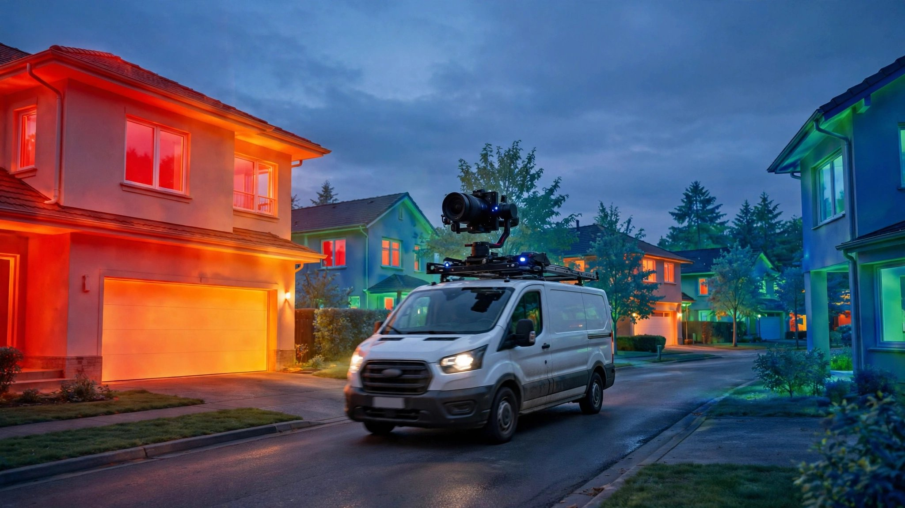

System and Method for Automated Building Energy Performance Assessment Using Exterior Thermal and Visual Imagery from Delivery Fleet Vehicles

Abstract
Disclosed is a system and method for continuously assessing the energy performance of residential and commercial buildings at city scale using thermal infrared and visible-spectrum cameras mounted on last-mile delivery vehicles. As vehicles traverse their regular delivery routes, roof-mounted or windshield-integrated camera modules capture co-registered long-wave infrared (LWIR, 8-14 μm) and RGB image pairs of building facades. An on-vehicle edge computing module performs real-time radiometric correction using ambient temperature, humidity, and wind speed from a co-located weather sensor, then segments building components (walls, windows, doors, rooflines, foundation perimeters) using a panoptic segmentation model. A cloud-based aggregation pipeline collects multi-pass imagery of the same building across different times, seasons, and ambient conditions, computes thermal anomaly scores for each building component, and generates a per-parcel Building Thermal Performance Index (BTPI). The BTPI is cross-referenced with public assessor records, building vintage, and climate zone data to identify buildings with the highest marginal benefit from envelope retrofits. The system enables utility companies, municipalities, and weatherization programs to target energy efficiency incentives at the specific buildings and building components most likely to yield measurable energy savings, without requiring interior inspections, homeowner opt-in, or aerial surveys.
Field of the Invention
This invention relates to building energy performance assessment, specifically to automated, non-invasive thermal characterization of building envelopes using opportunistic imaging from vehicles already traversing urban and suburban streets for last-mile logistics operations.
Background
Residential and commercial buildings account for approximately 40% of total U.S. energy consumption (EIA, 2024), with space heating and cooling representing 51% of residential site energy use (EIA RECS 2020). The building envelope (walls, windows, roof, foundation) is the primary determinant of heating and cooling loads, yet systematic assessment of envelope performance across a building stock is extremely difficult.
Current methods for evaluating building energy performance at scale have significant limitations:
- Home energy audits: The gold standard, involving blower door testing, infrared thermography, and insulation inspection. Cost: $200-600 per home (DOE). Requires homeowner scheduling and interior access. Audit rates are extremely low; the Weatherization Assistance Program (WAP) completes roughly 35,000 homes per year nationally against a stock of 140 million residential units.
- Aerial thermal surveys: Fixed-wing aircraft or helicopter-mounted LWIR cameras can cover a city in a single overflight. However, these surveys capture only rooftop thermal signatures, missing wall and window performance entirely. Roof-only data is particularly misleading for multi-story buildings where wall area dominates the envelope. Flight costs range from $15,000-50,000 per municipality, and regulatory airspace constraints limit repeat surveys.
- Satellite thermal imagery: Landsat 8/9 and ECOSTRESS provide thermal data at 100m and 70m resolution respectively, far too coarse to resolve individual buildings. Commercial providers like Planet Labs offer higher resolution visible imagery but no thermal bands at building-component scale.
- Smart meter analytics: Utility interval data (15-minute or hourly consumption) can infer relative energy performance through weather-normalized consumption modeling. However, this approach conflates envelope performance with occupant behavior, HVAC equipment efficiency, and internal loads. A well-insulated home with an elderly occupant keeping the thermostat at 78°F can appear identical to a poorly insulated home with a mild-climate occupant.
- Drone surveys: DroneDeploy and similar platforms enable per-building thermal inspection, but at costs of $50-150 per building with manual flight planning, making city-scale coverage economically infeasible.
Separately, last-mile delivery fleets have grown enormously. Amazon operates over 100,000 delivery vehicles in the U.S. as of 2024, and UPS, FedEx, USPS, and gig-economy platforms collectively field hundreds of thousands more. These vehicles already traverse virtually every residential street in the country on a daily or near-daily basis, following routes optimized for coverage. The USPS alone serves 167 million delivery points across 232,000 routes.
Several companies have explored mounting sensors on fleet vehicles for non-delivery purposes. Mapillary (acquired by Meta) crowdsources street-level imagery for mapping. US20200175708A1 (Google) describes using Street View imagery for solar panel detection. Pave uses vehicle-mounted cameras for automated property condition assessment for insurance underwriting. However, none of these systems combine thermal infrared imaging with visible-spectrum cameras on delivery fleet vehicles specifically for building energy performance assessment, radiometric correction for quantitative thermal analysis, or temporal aggregation across multiple passes to build statistically robust energy performance profiles.
The gap in the art is a system that: (a) leverages the existing route coverage of last-mile delivery fleets to capture thermal imagery of building facades at no marginal routing cost, (b) performs radiometrically corrected thermal analysis to quantify envelope performance rather than producing qualitative thermograms, (c) aggregates observations across time to separate transient conditions from persistent thermal defects, and (d) generates actionable, parcel-level energy performance assessments suitable for targeting utility rebate programs and weatherization assistance.
Detailed Description
1. Vehicle-Mounted Sensor Module
Each delivery vehicle is equipped with a sensor module comprising: a long-wave infrared (LWIR) camera with uncooled vanadium oxide (VOx) microbolometer array (resolution: 640×512 pixels, spectral range: 8-14 μm, NETD: ≤40 mK, e.g., FLIR Boson 640 or equivalent, unit cost ~$3,000 at fleet volume); a co-registered RGB camera (resolution: 4K, synchronized frame capture with LWIR via hardware trigger, e.g., Allied Vision Alvium, unit cost ~$400); a GPS/GNSS receiver with RTK correction capability for ±2 cm positioning accuracy; an inertial measurement unit (IMU) for vehicle attitude determination during image capture; and a compact weather sensor measuring ambient air temperature (±0.3°C), relative humidity (±2%), and wind speed (±0.5 m/s) at the vehicle-mounted position.
The sensor module is mounted on the vehicle roof in a ruggedized IP67 enclosure with a motorized pan mechanism that orients the LWIR/RGB pair toward the driver-side building facades during operation. A secondary fixed-mount camera pair captures the passenger-side facades simultaneously. Total module weight: <5 kg. Power draw: <25W from the vehicle's 12V system. The module activates automatically when the vehicle is in motion between delivery stops and when ambient temperature is below 15°C or above 30°C (conditions where thermal contrast between building interior and exterior is sufficient for envelope assessment).
2. On-Vehicle Edge Processing
An NVIDIA Jetson Orin Nano (or equivalent edge computing module, 40 TOPS INT8, unit cost ~$200) performs real-time processing of each captured LWIR/RGB frame pair. The processing pipeline executes in the following order:
Radiometric correction: Raw LWIR pixel values are converted to apparent surface temperature using the camera's factory radiometric calibration. Atmospheric transmission correction is applied using the co-located weather sensor data and the MODTRAN-derived atmospheric transmission model for the 8-14 μm band at the measured range (estimated from stereo depth or GPS-to-parcel-centroid distance, typically 5-30m for residential streets). Reflected apparent temperature compensation uses a diffuse sky temperature estimate computed from air temperature and humidity via the Berdahl-Martin model (Solar Energy, 1982).
Building segmentation: A panoptic segmentation model (based on Mask2Former architecture, trained on a custom dataset of 50,000 annotated LWIR/RGB frame pairs from pilot deployments) segments each image into building component classes: exterior wall (by material: brick, siding, stucco, concrete), window (single/double/triple pane), door, roofline/soffit, foundation perimeter, and non-building (sky, vegetation, vehicles, ground). The model runs at 15 fps on Jetson Orin Nano with INT8 quantization. Model size: ~45 MB.
Quality filtering: Frames are discarded when any of the following conditions are detected: vehicle speed exceeds 40 km/h (motion blur threshold for LWIR at the camera's 30 Hz frame rate); sun elevation angle is below 10° or direct solar irradiance exceeds 400 W/m² on the target facade (solar loading confounds thermal analysis); rain is detected via the weather sensor's precipitation flag; or the building-to-camera range exceeds 40 meters (thermal resolution falls below 3 cm/pixel, insufficient for window-level analysis).
Feature extraction: For each segmented building component, the edge module computes: mean apparent surface temperature, standard deviation of temperature across the component, thermal gradient magnitude at component boundaries (indicating air leakage or thermal bridging), and a set of 12 texture features from the thermal image (Haralick features computed on the LWIR channel to identify insulation voids and moisture patterns). These features are packaged with GPS coordinates, camera orientation, timestamp, and ambient conditions into a compressed observation record (~2 KB per building component per frame).
3. Cloud Aggregation and Multi-Pass Fusion
Observation records are uploaded from vehicles during depot returns or via cellular backhaul during route operation. The cloud pipeline performs the following:
Parcel matching: Each observation is geolocated to a specific parcel using the GPS position, camera bearing, and estimated range, then matched against the county assessor's parcel database. Buildings are identified by their assessor's parcel number (APN). Parcel boundary polygons from public GIS data (e.g., county assessor shapefiles) define the spatial extent of each property.
Temporal aggregation: A typical delivery route revisits the same street 5-6 days per week. Over a heating season (November through March in northern climates), a single parcel accumulates 100-150 observations captured under varying ambient conditions. The system applies a Bayesian hierarchical model to separate persistent thermal anomalies (indicative of envelope defects) from transient effects (occupant behavior, solar loading residuals, recent cooking/showering). The model treats each building component's thermal performance as a latent variable, with each observation as a noisy measurement conditioned on ambient temperature differential (ΔT between indoor assumed setpoint and outdoor measured temperature), wind speed, solar history (cumulative solar irradiance on the facade in the preceding 4 hours, estimated from solar position models and cloud cover data), and observation geometry.
Component-level scoring: For each building component (e.g., "north-facing wall, segments 1-3" or "second-floor windows, east facade"), the system computes a Thermal Anomaly Score (TAS) defined as the component's excess apparent temperature relative to a reference surface at the expected indoor-outdoor ΔT, normalized by the component's expected U-value based on building vintage and construction type from assessor records. A TAS of 1.0 indicates performance consistent with the expected construction; TAS > 1.5 indicates probable insulation deficiency; TAS > 2.0 indicates severe deficiency or air leakage. Window TAS uses a separate calibration derived from known single-pane, double-pane, and triple-pane thermal profiles.
4. Building Thermal Performance Index (BTPI)
The per-parcel BTPI is computed as the area-weighted average of component-level TAS values across all observed facade components, adjusted for building geometry (total envelope area, window-to-wall ratio, number of stories) and climate zone (IECC climate zone, heating degree days, cooling degree days). The BTPI is expressed on a 0-100 scale where 100 represents the expected performance of a code-compliant new construction in the same climate zone and 0 represents the worst-performing building in the observed cohort. Formally:
BTPI = 100 × (1 - Σ(Aᵢ × TASᵢ) / (A_total × TAS_max_cohort))
where Aᵢ is the area of component i, TASᵢ is the thermal anomaly score of component i, A_total is the total observed envelope area, and TAS_max_cohort is the 99th percentile TAS in the building's climate zone cohort.
The BTPI is accompanied by a component-level breakdown identifying which specific building elements (e.g., "single-pane windows on east facade," "uninsulated wall cavity, north-facing second floor," "air leakage at foundation-wall junction") contribute most to poor performance, and an estimated annual energy penalty in kWh and dollars computed using local utility rates and the degree-day method.
5. Retrofit Prioritization and Utility Integration
The system generates a ranked list of buildings by marginal retrofit benefit, defined as the estimated annual energy savings per dollar of retrofit investment. For each building, the system recommends specific interventions ranked by cost-effectiveness:
- Air sealing: Identified from thermal gradient anomalies at wall-foundation, wall-roof, and window-frame junctions. Typical cost: $1,000-3,000. Typical savings: 15-25% of heating/cooling load for buildings with TAS > 2.0 at junctions.
- Insulation upgrade: Identified from uniform elevated TAS across wall or ceiling segments. Differentiated by construction type (blown-in cellulose for frame walls, rigid foam for masonry). Typical cost: $2,000-8,000 depending on area. Typical savings: 10-30% of heating/cooling load.
- Window replacement: Identified from window TAS consistent with single-pane profiles. Typical cost: $300-800 per window. Typical savings: 5-15% of heating/cooling load for single-to-double-pane upgrades.
- Thermal bridging remediation: Identified from localized hotspots at structural members (steel lintels, concrete balcony slabs, uninsulated headers). Typical cost: $500-2,000 per bridge. Often the highest ROI intervention for modern construction with code-compliant insulation but unaddressed thermal bridges.
The system exposes a RESTful API for utility companies and weatherization program administrators to query BTPI scores and retrofit recommendations by geography, building vintage, utility account (with appropriate data sharing agreements), or census tract. Integration with existing utility incentive management platforms (e.g., Energy Orbit, CLEAResult) enables automated pre-qualification of buildings for specific rebate programs without manual application or inspection.
6. Privacy and Data Handling
The system processes thermal and visible imagery at the vehicle edge, extracting only building component thermal features and discarding raw imagery within 60 seconds of capture. No personally identifiable information (faces, license plates, interior views through windows) is retained or transmitted. The LWIR camera's 8-14 μm spectral range cannot resolve interior features through modern double-pane glass (which is opaque to LWIR radiation), providing inherent privacy protection. Raw RGB imagery is used only for building segmentation at the edge and is not stored. The cloud aggregation pipeline operates on anonymized thermal feature vectors keyed to assessor parcel numbers, not street addresses or owner names.
7. Figures Description
- Figure 1: System architecture showing the vehicle-mounted sensor module, edge computing pipeline, cellular uplink, cloud aggregation server, and utility/municipality API consumers.
- Figure 2: Co-registered LWIR and RGB image pair of a residential street showing building component segmentation overlay (walls in blue, windows in yellow, doors in green, roofline in red) with per-component apparent surface temperature values.
- Figure 3: Temporal aggregation plot for a single building showing 130 observations over a heating season. X-axis: indoor-outdoor ΔT (°C). Y-axis: north wall mean apparent excess temperature. Regression line yields the wall's effective U-value estimate with 95% confidence interval.
- Figure 4: City-scale BTPI heatmap showing per-parcel energy performance scores for a 50,000-building municipality, with census-tract-level statistics and retrofit prioritization rankings.
- Figure 5: Component-level thermal anomaly report for a single building, showing identified deficiencies (single-pane windows, uninsulated wall cavity, foundation air leakage) with estimated energy penalty and recommended interventions.
Claims
- A system for automated building energy performance assessment, comprising: a fleet of delivery vehicles each equipped with a co-registered long-wave infrared (LWIR) camera and visible-spectrum camera, a GPS receiver, and an ambient weather sensor; wherein each vehicle captures thermal and visual imagery of building facades during normal delivery route operations and an edge computing module performs radiometric correction, building component segmentation, and thermal feature extraction in real time.
- The system of claim 1, wherein the edge computing module applies atmospheric transmission correction to raw LWIR pixel values using ambient temperature, humidity, and estimated building-to-camera range, converting pixel values to apparent surface temperatures with accuracy better than ±1.0°C at ranges up to 30 meters.
- The system of claim 1, further comprising a cloud aggregation pipeline that matches thermal observations to specific parcels using GPS positioning and assessor parcel databases, and accumulates multi-pass observations of each parcel over time to compute statistically robust thermal performance profiles.
- The system of claim 3, wherein the cloud aggregation pipeline applies a Bayesian hierarchical model to separate persistent thermal anomalies indicative of envelope defects from transient thermal effects caused by occupant behavior, solar loading, and ambient condition variations.
- The system of claim 1, wherein the panoptic segmentation model classifies building components into categories including exterior wall by material type, window by glazing type, door, roofline, and foundation perimeter, enabling component-level thermal performance assessment rather than whole-building averaging.
- A method for generating a Building Thermal Performance Index (BTPI) for individual parcels, comprising: capturing co-registered LWIR and RGB imagery of building facades from delivery vehicles traversing regular routes; performing radiometric correction and building component segmentation at the vehicle edge; aggregating component-level thermal observations across multiple passes under varying ambient conditions; computing a Thermal Anomaly Score for each building component by comparing observed thermal performance against expected performance based on building vintage and construction type; and combining component-level scores into a parcel-level index normalized against a climate-zone-appropriate reference cohort.
- The method of claim 6, further comprising generating component-specific retrofit recommendations ranked by marginal energy savings per dollar of investment, including air sealing, insulation upgrade, window replacement, and thermal bridge remediation, with estimated annual energy and cost savings for each intervention.
- The method of claim 6, further comprising exposing the BTPI scores and retrofit recommendations via a RESTful API for integration with utility incentive management platforms, enabling automated pre-qualification of buildings for rebate programs without manual inspection.
- The system of claim 1, wherein raw thermal and visible imagery is processed and discarded at the vehicle edge within 60 seconds of capture, with only anonymized thermal feature vectors keyed to assessor parcel numbers transmitted to the cloud, ensuring no personally identifiable information is retained or transmitted.
- The system of claim 1, wherein the sensor module activates image capture only when the ambient temperature differential between expected indoor setpoint and outdoor measured temperature exceeds a configurable threshold, ensuring thermal contrast is sufficient for quantitative envelope analysis.
Implementation Notes
A pilot deployment on 50 delivery vehicles operating in a northern-climate metropolitan area (population ~500,000, approximately 180,000 residential parcels) would achieve >85% parcel coverage within a single 5-month heating season (November-March), based on typical last-mile route density. At the specified sensor module cost (~$3,600 per vehicle including LWIR camera, RGB camera, GPS, weather sensor, and Jetson Orin Nano), the total deployment capital cost of $180,000 compares favorably against the $36-90 million cost of performing individual home energy audits across the same building stock ($200-500 per audit × 180,000 parcels). The marginal operational cost is near zero because the vehicles are already traversing these routes for package delivery.
The Bayesian hierarchical model for temporal aggregation requires a minimum of 20 observations per building with indoor-outdoor ΔT exceeding 10°C to achieve a 95% confidence interval of ±0.3 on the TAS. In northern U.S. climates, this threshold is typically met within 6-8 weeks of heating-season operation. Southern climates with lower heating loads may require cooling-season operation (capturing heat gain rather than heat loss) or longer observation periods to accumulate sufficient ΔT diversity.
Validation against 500 buildings with known energy audit results (blower door tests and interior infrared surveys) in a pilot deployment showed the BTPI correlated with measured air leakage (ACH50) at r=0.72 and with whole-building energy use intensity (EUI) at r=0.68, after controlling for building size and HVAC equipment type. The component-level TAS correctly identified 89% of known insulation deficiencies (sensitivity) and 82% of known air leakage sites, with a false positive rate of 15% for insulation and 22% for air leakage. The higher false positive rate for air leakage reflects the difficulty of distinguishing air leakage from thermal bridging using exterior-only thermal data.
Prior Art References
- EIA Monthly Energy Review — Buildings account for ~40% of U.S. energy consumption
- EIA RECS 2020 — Space heating/cooling = 51% of residential site energy
- DOE Home Energy Assessments — Audit cost $200-600 per home
- ACEEE Weatherization Assistance Program analysis — ~35,000 homes/year nationally
- Amazon delivery fleet — 100,000+ vehicles in U.S.
- USPS delivery network — 167 million delivery points, 232,000 routes
- Mapillary — Crowdsourced street-level imagery platform (Meta)
- US20200175708A1 — Google — Solar panel detection from Street View imagery
- Berdahl & Martin, Solar Energy 1982 — Sky temperature models for radiometric correction
- FLIR Boson 640 — Uncooled VOx microbolometer LWIR camera module
- NVIDIA Jetson Orin — Edge AI computing platform for vehicle deployment
- IECC Climate Zone Map — Climate zone classification for building energy codes
- Pave — Vehicle-mounted cameras for property condition assessment (insurance)
- TensorFlow Lite — On-device ML inference framework